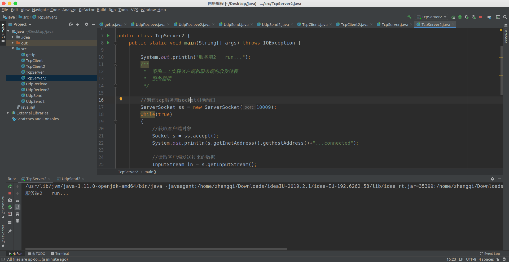
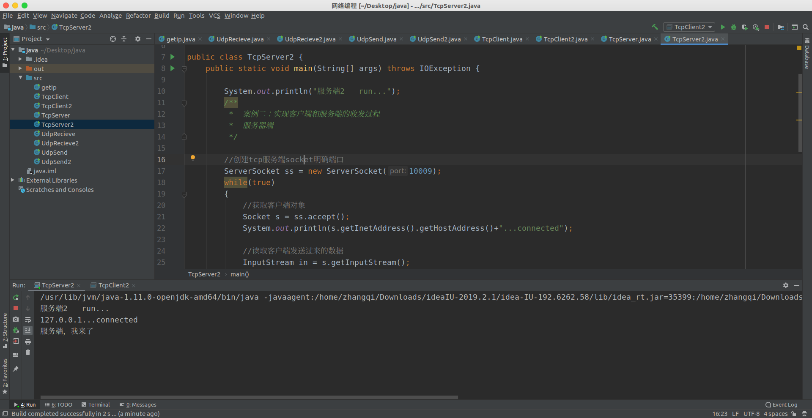
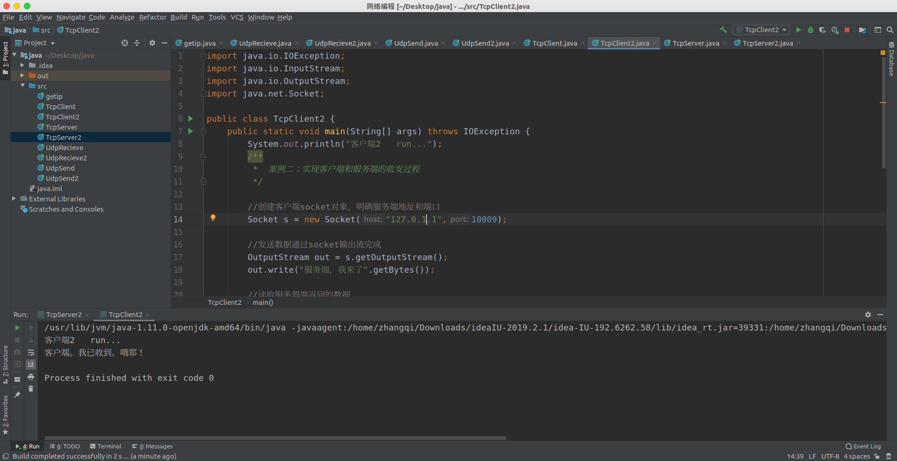

先创建socket对象建立tcp客户端，明确服务端的地址和端口，必须与服务端对应，要不然对方收不到消息，就像快递填错了送货地址。
Socket s = new Socket("127.255.255.25", 10003);然后建立起连接通道后就会出现socket的IO流，作为客户端我们是发送数据的，我们将数据发送到服务端让它去处理，所以我们获取的也就是OutPutStream，就是将数据写给服务端
OutputStream out = s.getOutputStream();然后剩下的就是给服务端写数据了，这些操作其实就和IO流那块一样了，比如我们下面这样
out.write("hello,TCP来了".getBytes());最后一定记得关闭socket资源
import java.io.IOException;
import java.io.OutputStream;
import java.net.Socket;
public class TcpClient {
public static void main(String[] args) throws IOException, IOException {
System.out.println("客户端运行。。。");
/**
* 需求：通过tcp传输数据发送给服务器
* 思路：
* 1、建立tcp客户端socket.明确服务端的地址和端口
* 2、如果通道建立成功就会出现socket io流
* 客户端需要做的就是获取socket流中输出流将数据发送目的地服务端
* 3、通过socket输出流将数据发送
* 4、关闭
*/
//1、建立tcp客户端socket.明确服务端的地址和端口
Socket s = new Socket("127.255.255.25", 10003);
//2、如果通道建立成功就会出现socket io流 客户端需要做的就是获取socket流中输出流将数据发送目的地服务端
//3、通过socket输出流将数据发送
OutputStream out = s.getOutputStream();
out.write("hello,TCP来了".getBytes());
//4、关闭
s.close();
}
}当你给服务端发送完数据后，有可能服务端还会给你回复一些数据，这时候在客户端还需要去接收服务端发送来的数据，只需要
InputStream in = s.getInputStream();获取读取流，然后像IO流一样操作就可以读取返回的数据了
package tcp;
import java.io.IOException;
import java.io.InputStream;
import java.io.OutputStream;
import java.net.Socket;
public class TCPClient2 {
public static void main(String[] args) throws IOException{
System.out.println("客户端2 run...");
/**
* 案例二：实现客户端和服务端的收发过程
*/
//创建客户端socket对象，明确服务端地址和端口
Socket s = new Socket("127.255.255.25",10009);
//发送数据通过socket输出流完成
OutputStream out = s.getOutputStream();
out.write("服务端，我来了".getBytes());
//读取服务器端返回的数据
InputStream in = s.getInputStream();
byte[] buf = new byte[1024];
int len= in.read(buf);
System.out.println(new String(buf,0,len));
// int len = 0;
// while((len = in.read(buf)) != -1)
// {
// System.out.println(new String(buf,0,len));
// }
//关闭资源
s.close();
}
}服务端要与客户端相连接，就必须创建一个服务端Serversocket对象，并明确端口，这个端口必须与客户端socket连接的端口一致，然后用一个socket对象去接收客户端的socket
ServerSocket ss = new ServerSocket(10003);//创建服务端的socket。需要明确端口（监听一个端口），要不然客户端无法连接
Socket s = ss.accept();//服务端只要获取到连接过来的客户端就可以和指定的客户端通信了这个接收客户端的socket对象s里面封装了不光数据内容，还有数据来源的主机IP等等信息。
然后获取流对象，对客户端发送来的数据进行读取
InputStream in = s.getInputStream();接下来就和IO操作一样，对数据进行处理即可。
import java.io.IOException;
import java.io.InputStream;
import java.net.ServerSocket;
import java.net.Socket;
public class TcpServer {
public static void main(String[] args) throws IOException {
System.out.println("服务端。。。");
/**
* 需求：获取客户端的数据并显示在屏幕上
*
* 思路：
* 1、创建服务端的socket。需要明确端口（监听一个端口），要不然客户端无法连接
* 2、服务端只要获取到连接过来的客户端就可以和指定的客户端通信了
* 3、通过获取客户端的读取流对象读取客户端发来的数据
* 33、并显示在屏幕上
* 5、关闭资源
*/
//1、创建服务端的socket。需要明确端口（监听一个端口），要不然客户端无法连接
ServerSocket ss = new ServerSocket(10003);
//2、服务端只要获取到连接过来的客户端就可以和指定的客户端通信了
Socket s = ss.accept();
String ip = s.getInetAddress().getHostAddress();
System.out.println(ip+"...connected");
//3、通过获取客户端的读取流对象读取客户端发来的数据
InputStream in = s.getInputStream();
//33、并显示在屏幕上
byte[] buf = new byte[1024];
int len = 0;
while((len = in.read(buf)) != -1)
{
System.out.println(new String(buf, 0, len));
}
//5、关闭资源
s.close();
//ss.close(); 这一般不关
}
}一般服务端接收到数据之后，它还会给客户端返回一些反馈信息，我们可以继续获取读写流，对客户端进行写入操作，即反馈信息。
import java.io.IOException;
import java.io.InputStream;
import java.io.OutputStream;
import java.net.ServerSocket;
import java.net.Socket;
public class TcpServer2 {
public static void main(String[] args) throws IOException {
System.out.println("服务端2 run...");
/**
* 案例二：实现客户端和服务端的收发过程
* 服务器端
*/
//创建tcp服务端socket明确端口
ServerSocket ss = new ServerSocket(10009);
while(true)
{
//获取客户端对象
Socket s = ss.accept();
System.out.println(s.getInetAddress().getHostAddress()+"...connected");
//读取客户端发送过来的数据
InputStream in = s.getInputStream();
byte[] buf = new byte[1024];
int len = in.read(buf); //读取到数据之前，线程处于阻塞状态
System.out.println(new String(buf,0,len));
// int len = 0;
// while((len = in.read(buf)) != -1)
// {
// System.out.println(new String(buf,0,len));
// }
//
// System.out.println("阻塞了吗？");
//给客户端回馈数据
OutputStream out = s.getOutputStream();
out.write("客户端。我已收到。哦耶！".getBytes());
//关闭客户端
s.close();
}
//关闭服务端
//ss.close(); 如果是不断的获取客户端，就不用关闭服务器
}
}先开启服务端

服务端收到数据

客户端收到反馈
